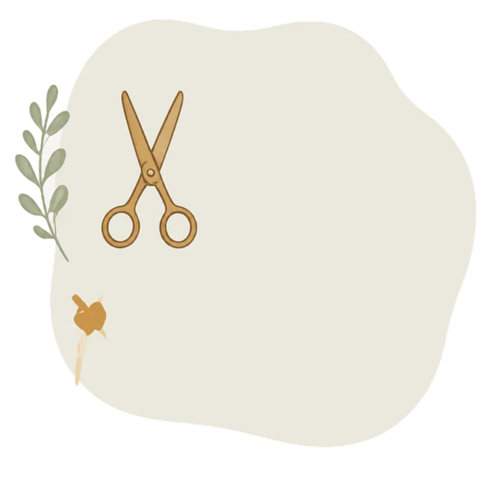
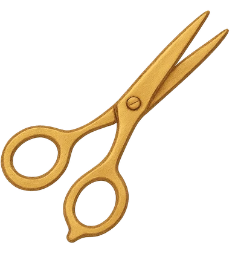
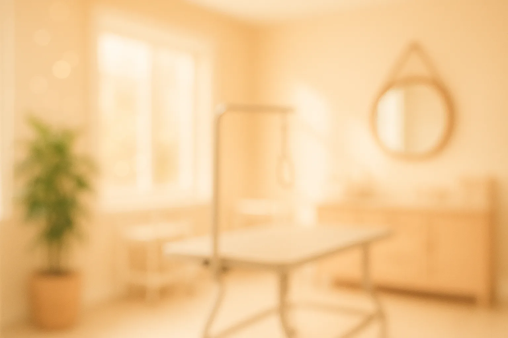
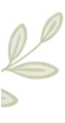
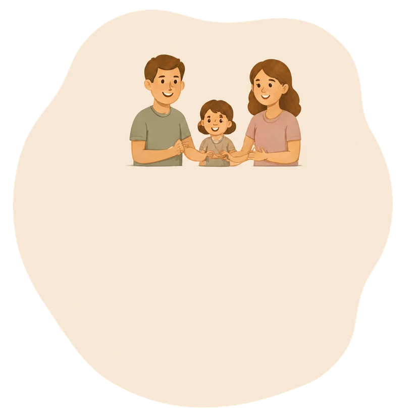
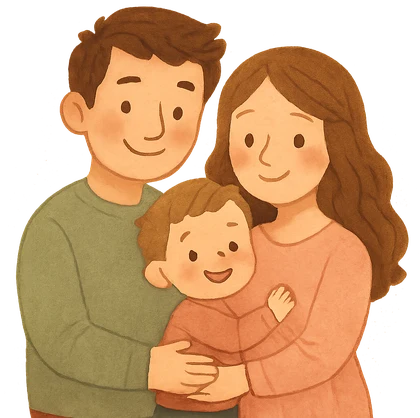
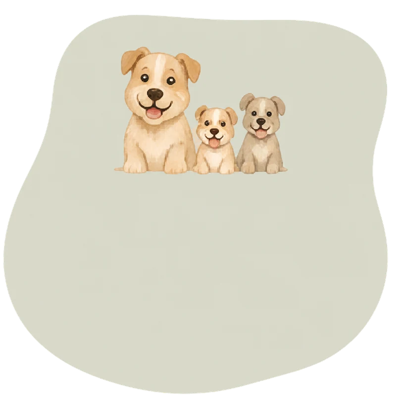
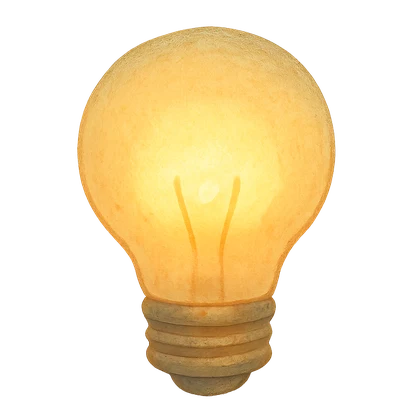

Trimsalon
Professionele vachtverzorging voor jouw hond, inclusief knippen, plukken, wassen, ontwollen en puppy gewenning.


Waar blije honden stralen
Onze trimsalon en hondentraining staan voor kwaliteit,
comfort en een persoonlijke aanpak voor jou en je hond.
Blije hond. Schone hond. Geliefde hond.


Wat wij aanbieden
Of je nu een speelse pup hebt, een gevoelige senior of gewoon wat hulp kunt gebruiken:
wij staan klaar met liefde, kennis en ervaring.


Professionele vachtverzorging voor jouw hond, inclusief knippen, plukken, wassen, ontwollen en puppy gewenning.
Praktische cursussen zoals puppytraining, basis en pubercursus, individueel of in groepsverband – altijd op maat en positief.


Begeleiding voor gezinnen met kinderen en honden. Veilig en positief samenleven, vanaf de eerste ontmoeting tot de dagelijkse routine.

Gespecialiseerde training voor honden die angstig zijn bij borstelen, wassen, nagels knippen of andere trimsalonervaringen.

Leer zelf je hond knippen, verzorgen of kalm blijven in kleine groepen of individueel. Praktisch, leerzaam en gezellig.


Elke hond en situatie is anders. Wij denken mee en passen de training of verzorging aan op jouw wensen en de behoeften van je hond.
Over mij
Ik ben Sharon Peeters, ik ben getrouwd en ik heb 2 dochters. Ik heb voor een lange tijd in de retail gewerkt als leidinggevende. Dit werk heb ik altijd met plezier gedaan, maar toch merkte ik dat ik graag iets anders zou willen doen. Ik heb als kind altijd al willen werken met dieren. Dit komt ook omdat ik met dieren ben opgegroeid en het geweldig vind om met dieren bezig te zijn.
Ik heb nooit echt geweten wat ik graag zou willen doen met dieren tot nu! Als leidinggevende vond ik het altijd leuk om mensen te helpen en te coachen. Zo kwam ik er ook achter dat ik het trainen van honden en mensen een leuke uitdaging vind. Daarnaast ben ik graag bezig met honden en vandaar de keuze om een trimsalon te starten.
Ik heb de opleiding voor het trimmen bij Huisdier Kennis Instituut (HKI) in Bunnik gevolgd. De opleiding tot Kynologisch instructeur heb ik gevolgd bij Hondenadvies Centrum Roermond (HACR). Ik heb mij daarnaast nog gespecialiseerd in hond en kind bij Dierbare ontmoetingen.